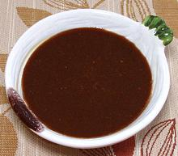

 |
Vinaigrette BalsamicGeneral Euro-American | ||||
| Makes: Effort: Sched: DoAhead: |
1 cup * 5 min Yes |
This is a standard salad dressing adjusted to Southern California tastes. In France and some other regions it would be 3/4 cup Olive Oil, 1/4 cup Balsamic Vinegar. | |||
|
|
2/3 1/3 1/2 1/2 1/3 |
c c T t t |
Olive Oil, ExtV Balsamic Vinegar (1) Dijon Mustard (2) Salt Pepper |
|